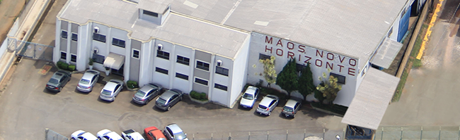
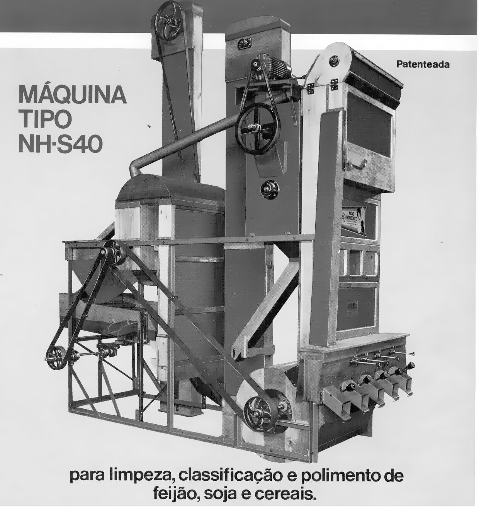
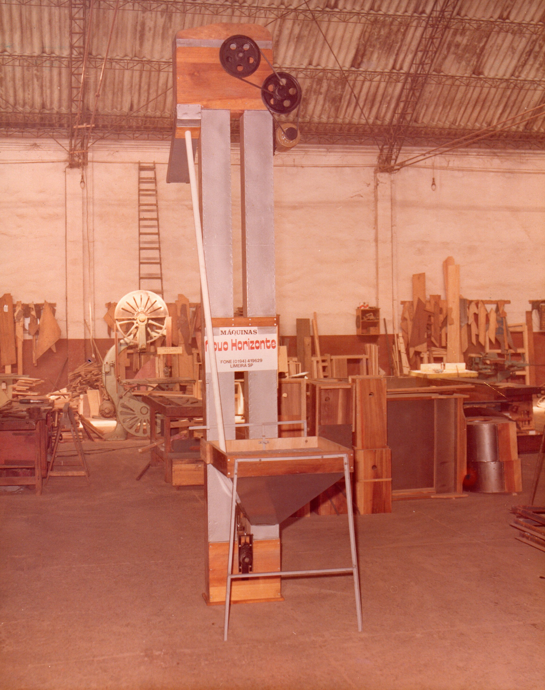
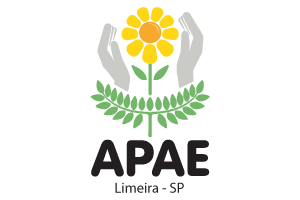
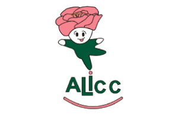
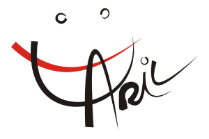

Há mais de 38 anos presente na vida dos brasileiros.

Não demorou para que a pequena empresa, alicerçada na honestidade e qualidade de seus produtos, conquistasse diversos parceiros, tornando a sua ascensão uma consequência natural.
Assim, desde 1981 na cidade de Limeira – SP, a Novo Horizonte conquista o seu espaço no mercado através dos seus valores fundamentais, oferecendo aos seus clientes não apenas equipamentos, mas soluções integradas, socialmente responsáveis e inovadoras, capazes de contribuir com os seus parceiros e a sociedade.
Hoje, esse reconhecimento faz da Novo Horizonte a líder em máquinas para beneficiamento do feijão. Diante disso e ciente do seu papel na vida dos brasileiros, a empresa se estruturou, conta com um parque industrial de 7500 m² e um quadro de 70 funcionários, expandiu, possui presença forte na América Latina, e está pronta para atender a demanda nacional e internacional.
Navegue pelo site e conheça as nossas soluções!




Associação de Pais e Amigos
dos Excepcionais de Limeira

Associação Limeirense de
Combate ao Câncer

Associação de Reabilitação Infantil
Limeirense
As instituições beneficiadas possuem atuação regional e são consagradas pelo seu belo e necessário trabalho.
MISSÃO
VISÃO
VALORES
• Qualidade
• Comprometimento
• Melhoria contínua
• Inovação
• Sustentabilidade
A Novo Horizonte atua em duas áreas:
Beneficiamento de grãos:
Área que consagrou a empresa no mercado, o beneficiamento de grãos é tradição na Novo Horizonte e conta com mais de 35 anos de expertise. Fornece soluções completas para toda a cadeia pós-colheita, especialmente para o feijão, desenvolvendo conjuntamente com o cliente o projeto a ser implementado, otimizando o processo e detectando oportunidades.
Os equipamentos dessa área são compostos por polidores, separadores de pedra, mesas de gravidade, máquinas de limpeza e pré-limpeza, máquinas de feijão (conjunto de classificação), classificadores de peneiras, silos, transportadores mecânicos de correia, transportadores contínuos horizontais (tapi), dentre outros.
Acondicionamento de produtos:
Área de crescimento vertiginoso na empresa, as máquinas de empacotamento e enfardamento da Novo Horizonte possuem grande aceitação no mercado, tanto nacional quanto internacional, oferecendo soluções inovadores por um valor altamente competitivo. São conhecidas pela qualidade de seus materiais, facilidade de manuseio e alta produtividade. A empresa atua nesse segmento há mais de 20 anos.
Entre em contato conosco e conheça mais sobre as nossas soluções!